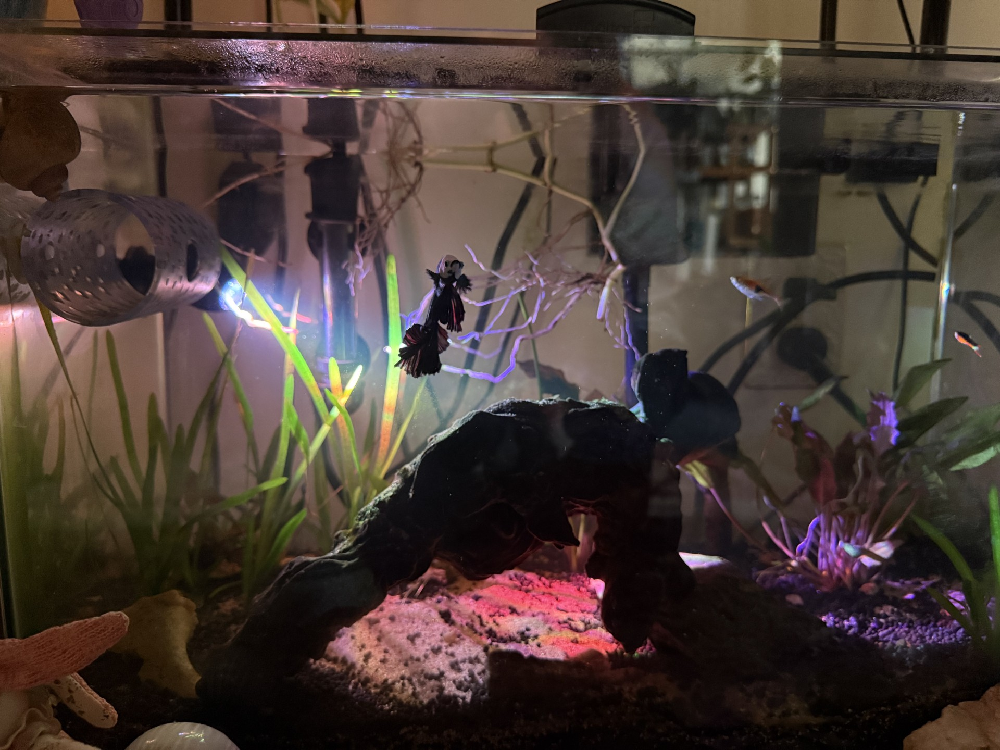
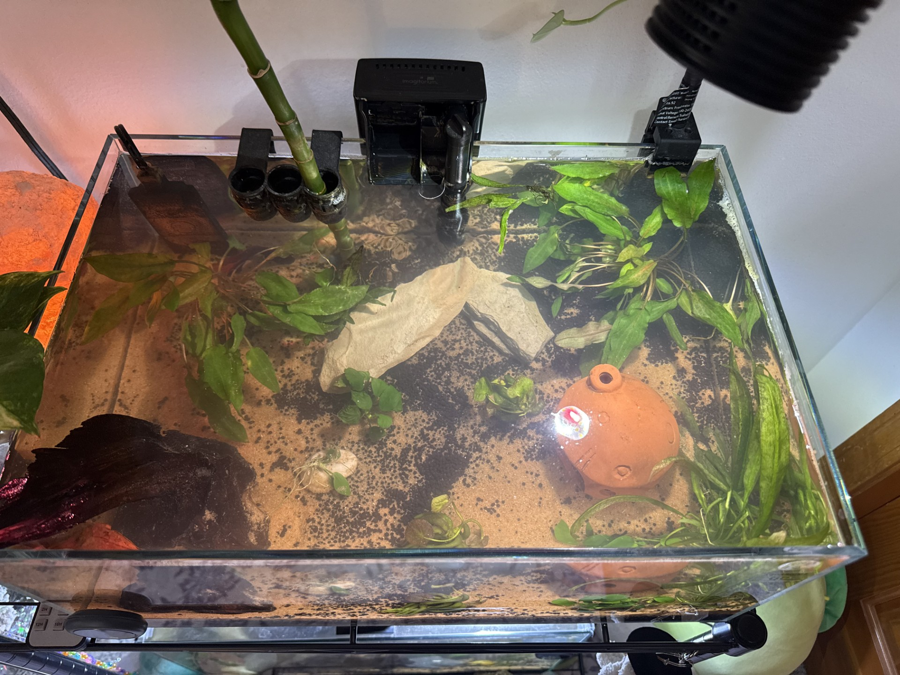
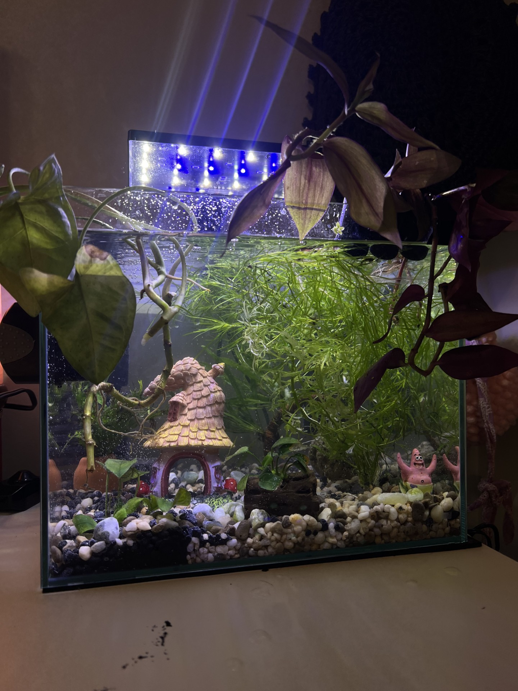

About This Website
This website is all about aquascaping and planted aquariums for those interested in the hobby. On one page, you will find a setup guide on how to build your own planted aquarium, and the another page will introduce you to common plants and fish to have in your aquarium. Enjoy exploring a hobby that brings peace and creativity to many.
What are Planted Aquariums and why start one?
Planted aquariums combine fish, aquatic plants, and design techniques to create mostly self-sustaining ecosystems. With a wide variety of aquatic life and gear to choose from, every tank can be customized exactly how the person would like. People enjoy this hobby as it brings peace and happiness while allowing them to create something and watch it flourish.